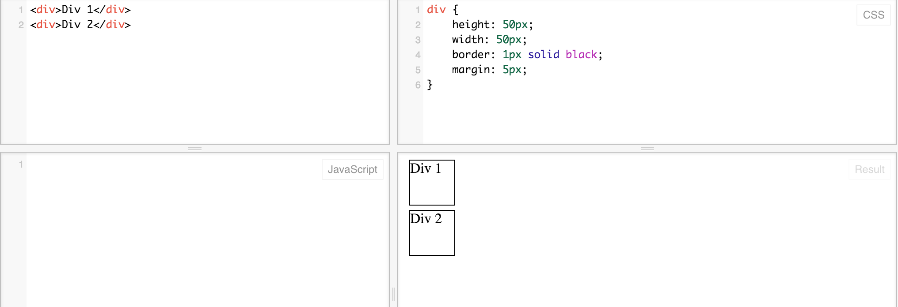
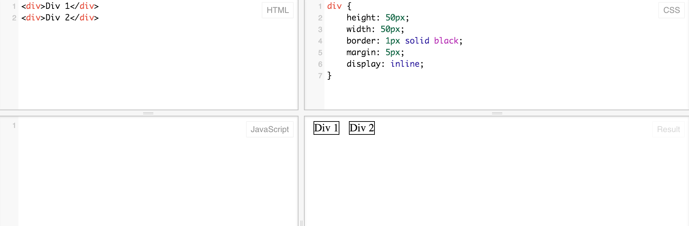
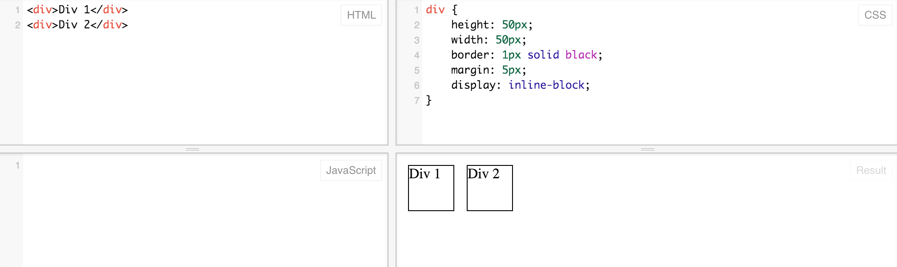

Today I'll be writing a bit about the display property in CSS, specifically what the differences are between inline and inline-block formats.
When styling with CSS, one of the tools at our disposal is the display property. The display property dictates how an element will behave when laid out on the page. While every element has a default display property, we can change them in order to bring about the layouts we want.
One possible display property value is 'block'. Block elements have a defined height and width, and generally start a new line in the browser when displayed. For instance, the following HTML and CSS, which create two divs, (whose default display value is block) results in the following output.
As you can see, even though there is plenty of room for the elements to be on the same line, they don't behave that way. Each block gets its own line. While we could float them in order to change that, that's not a topic we're going to cover today.
Another common display property value is inline. Inline elements don't start their own line or have settable heights and widths - they simply take as much space as necessary. So if we change the display property for those divs to inline, you can see that they end up on a single line:
While the inline format is the default for HTML elements such as span, a (anchor/link), and img, we can use inline for other elements as shown above. There are some downsides though - notice that even though we've defined the height and width, those values clearly aren't applying to our div blocks, which are as short and squat as they can be. If only there was a way to mix the sizing properties of a block with the line-by-line behavior of inline elements...
As you might have guessed, there is! It's called the inline-block, and it allows us to specify height and width for a block while still retaining inline behavior: they will still be on the same line. Check it out:
Now we get to keep the appearance of blocks and the inline behavior. Indeed, this is a good way to create column-based layouts without using floats.
There are a couple of complications and things to watch out for, which I'll mention briefly. One is simply browser compatibility - inline-blocks are not fully supported by ancient versions of Internet Explorer that you probably don't want to use anyway (there are some workarounds if you're really devoted). Additionally, there is an unexpected issue with whitespace. Both inline and inline-block elements won't be exactly adjacent to each other, even if you set the margin to 0. There are two workarounds: 1) set a negative margin, or 2) remove the relevant whitespace from your HTML. For instance, in our example above, writing the HTML like so:
<div>Div 1</div><div>Div 2</div>
Alternatively, you could comment out the whitespace. It's a funky fix, and tinkering with your HTML to produce a design change is generally a bad sign, but in some cases you may prefer it to the negative margin fix.
Nonetheless, inline-blocks are a very useful tool in your web design arsenal and can simplify your work in many cases.
Comments